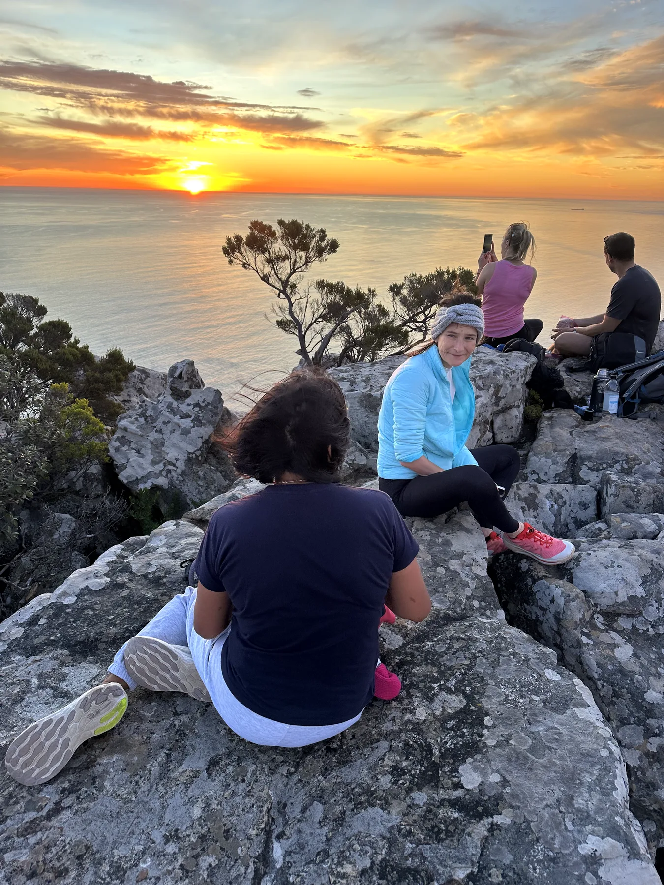
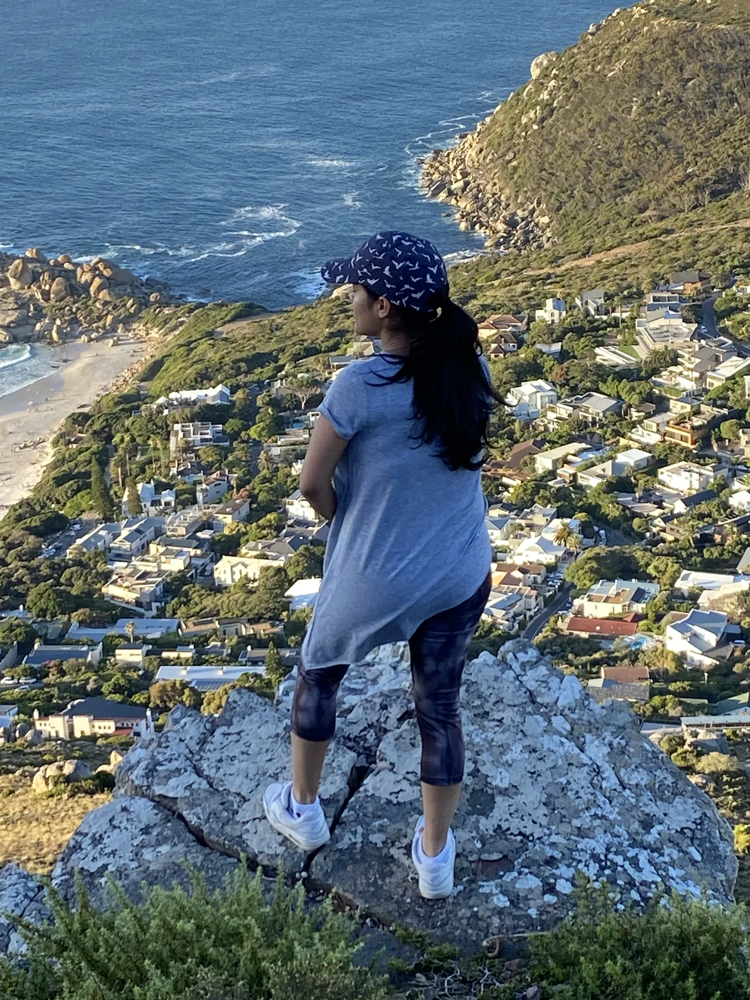
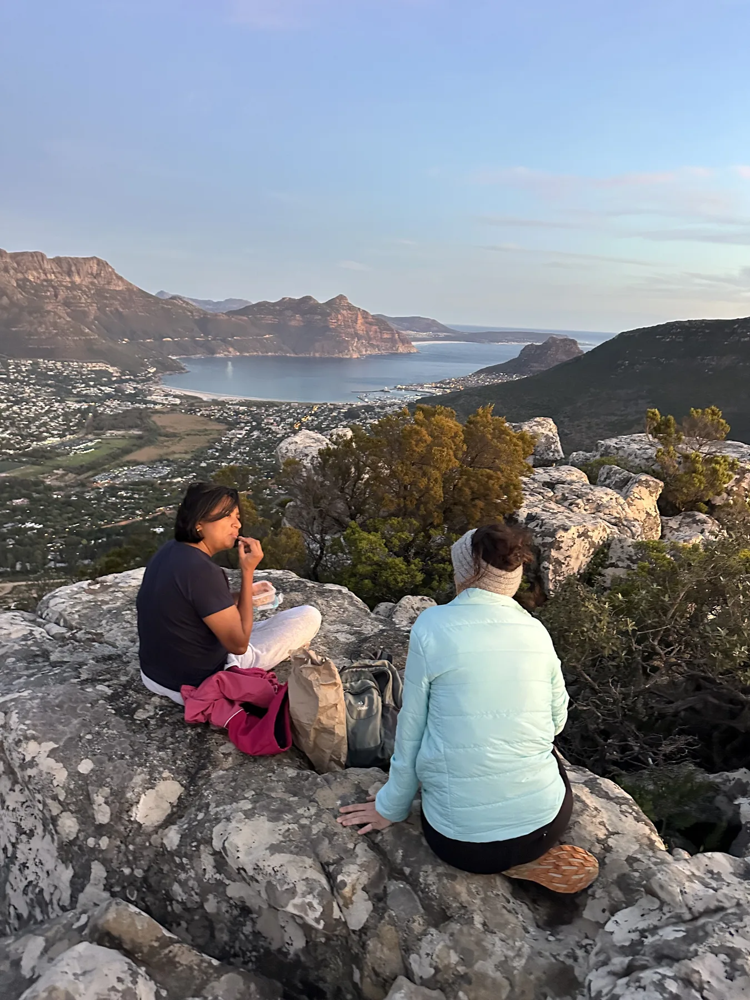

Short and steep
We gain height quickly and the coastal views begin opening almost immediately.
Small mountain. Massive views.
Little Lion’s Head packs an incredible amount of adventure into a short route. The trail climbs steeply through uneven terrain before becoming more playful as we scramble toward the summit.
At the top, views stretch from Hout Bay and surrounding peaks across Llandudno and along the Atlantic coastline toward Lion’s Head.
While Cape Town’s famous sunset spots draw the crowds, this less-travelled summit gives us space to settle in for sunset, coffee or tea and an Outdoor Addicts treat.
We gain height quickly and the coastal views begin opening almost immediately.
Hout Bay, Llandudno, surrounding peaks and the Atlantic coastline surround the route.
Short adventurous scrambling near the top adds a playful finish to the climb.
Slow down for sunset, coffee or tea, an Outdoor Addicts treat and photos.
Retrace the route with Outdoor Addicts headlamps as the light fades.



Short in distance but steep underfoot. The final approach includes short scrambling and some exposure. Guests should be reasonably active and comfortable using their hands on rocky terrain.
Meeting time is shown for each departure. Return transport from Cape Town is optional.
Outdoor Addicts transport is limited to 6 guests and subject to availability. Final pickup arrangements are confirmed after booking.